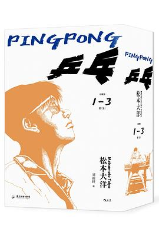

乒乓

总体观点
《乒乓》（ピンポン）是日本当代殿堂级漫画家松本大洋于1996年至1997年创作的五卷本长篇运动题材经典，曾被改编为汤浅政明执导的同名动画神作。在充斥着必杀技与超能力噱头的传统体育竞技漫画谱系中，《乒乓》以其近乎野兽派的写意线条、充满超广角镜头张力的分镜构图，以及对‘天赋与努力’残酷鸿沟极其深刻的存在主义哲思，彻底登上了运动漫画艺术的至高巅峰。
小说通过片濑高中的发小双子星——狂妄自负但遭遇滑铁卢的天才‘阿扁’星野裕，与冷漠木讷、视乒乓球为消磨时间工具的无情防守高手‘笑匠’月本诚，勾勒出一组极具张力的心理对位。作品没有廉价的‘努力必胜’鸡汤，而是直面竞技体育最冰冷的达尔文法则：面对如同机器般精密苦练的中国留学生孔文革、背负沉重家族荣耀的风间龙一（海王队长），凡人哪怕付出十倍血汗也会被天赋之壁撞得头破血流。然而，松本大洋最终以‘英雄苏醒’的炽热呼唤，让乒乓球剥离所有功利枷锁、重归童年纯粹欢愉，谱写了一曲献给所有在热爱中燃烧过自我的失败者与胜者的崇高赞歌。
核心观点
-
1. 天才与凡人的残酷天堑：努力在绝对天赋面前的局限性
竞技体育存在不可逾越的生理与感性天赋壁垒，认清自身局限并不意味着可耻，而是成熟的开始。
恶魔佐久间日夜苦练磨损韧带却依然被笑匠轻易横扫，最终在洗手间含泪劝诫阿扁‘有些风景，只有真正有才能的人才看得见’。 -
2. 英雄情结的心理投影与灵魂唤醒
自闭冷漠的灵魂深处始终在等待一位能够打破黑暗、拯救自我的耀眼英雄，而这个英雄正是昔日挚友。
笑匠自幼被关在铁储物柜里自闭发呆，是阿扁敲开铁门伸出手带他打球；多年后笑匠在球场苦等阿扁重新找回野性英雄姿态。 -
3. 剥离功利胜负：重拾童年击球的纯粹欢愉
背负太多赞助商、家族期待与胜负执念的比赛是沉重的苦役，唯有找回‘球在跳跃、风在飞扬’的玩乐初心方能登峰造极。
风间龙一在决赛前躲在厕所隔间里恐惧颤抖，直到在赛场上与阿扁极速对拉，终于在满头大汗中爆发出十年来从未有过的由衷大笑。 -
4. 孔文革的流浪异乡客救赎：由傲慢失意到扎根成长
因国家队竞争失利被流放日本的中国留学生，在与异国对手的真诚碰撞中洗去狂躁，重新找到了自我尊严与家园归属。
孔文革从最初蔑视‘日本高中乒乓球不过是小儿科’，到主动在小饭馆教辻堂学院的同伴切球技术并与大家合唱新年歌谣。 -
5. 超广角与解构主义分镜的运动美学风暴
打破传统九宫格漫画方框，利用大透视、鱼眼变形与拟声词的爆炸排版，在二维纸面上还原毫秒级的乒乓电光石火。
小小一颗乒乓球在两张横跨双联页的球台之间化作呼啸的流星，球拍胶皮与球心撞击的声音充塞天地，极具窒息感。
全书结构
-
狂妄阿扁与机器人笑匠的片濑日常
介绍星野裕（阿扁）的狂妄天才个性与月本诚（笑匠）的冷漠球风，二人在街头乒乓球道场与学校社团的悠闲混日子。
阿扁叼着棒棒糖在球台前挑衅对手，笑匠在旁边面无表情地转动魔方，老教练小泉在一旁若有所思地盯紧笑匠反手削球。 -
异乡猛虎：中国留学生孔文革的降维打击
辻堂高中引入前中国省队高手孔文革，阿扁前去踢馆惨遭零封剃光头，职业选手的恐怖压迫感让阿扁遭遇人生首场惨败。
孔文革在球台前甚至没有脱下外套，连续暴力抽杀将阿扁打得倒地不起，冷冷留下一句‘你连给我提鞋都不配’。 -
高中联赛大溃败与阿扁的沉沦放弃
高中预选赛阿扁被恶魔佐久间击溃，道心彻底破碎，扔掉球拍沉溺于抽烟游荡；与此同时笑匠在小泉魔鬼特训下迅速蜕变成为绝对王牌。
阿扁把陪伴自己十年的红双喜球拍扔入冰冷的河水中，站在桥头喃喃自语：‘我不再打乒乓球了。’ -
英雄觉醒：田村道场的魔鬼蜕变
在恶魔佐久间的当头棒喝与田村婆婆的严酷鞭策下，阿扁重拾球拍远赴深山苦练，克服右膝重伤重新脱胎换骨。
阿扁在烈日下的沙滩上绑着沙袋疯狂跨步救球，膝盖渗血依然迎着海风狂奔大喊：‘血液在奔流！英雄要回来了！’ -
全国大赛终局对决：呼唤英雄的绝杀舞台
全国大赛半决赛阿扁带伤逆风掀翻风间龙一，决赛与笑匠相逢于万众瞩目的中央球台，在一场超越胜负的狂喜对攻中完成生命的圆满。
‘英雄参上！英雄参上！’笑匠在球台前泪流满面全力挥拍，两颗少年炽热的心在白色的乒乓弧线中彻底融为一体。